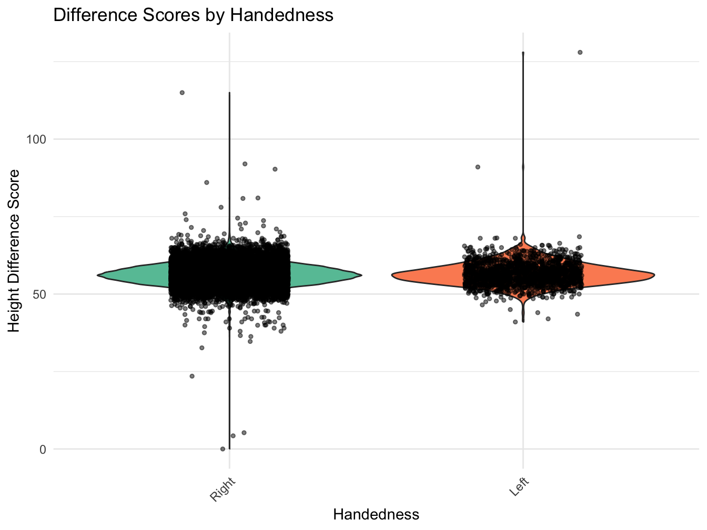

library(tidyverse) # Collection of R packages for data science
library(gtsummary) # Publication-ready tables
library(rstatix) # Statistical Tests in tidy formatDifference Scores: Simple Regression
Overview
This example assesses whether height in a subsample of ABCD participants from the baseline assessment to the 1-Year follow-up differs significantly based on participant’s handedness. The analysis is conducted in two primary steps: 1) a difference score is calculated between baseline and year 1 height measurements for each participant; 2) a simple regression analysis is used to test whether handedness (left, right) predicts the average difference value in participants height from baseline to the 1-Year follow-up. Finally, a visual inspection is further conducted via a violin plot to graphically represent the relationship between the difference score and handedness.
Preliminary Setup
Load R libraries
Descriptives
descriptives_table <- df_long %>%
select(event, handedness, height) %>%
mutate(event = factor(event)) %>%
mutate(handedness = factor(handedness)) %>%
tbl_summary(
by = event,
missing = "no",
label = list(handedness ~ "Handedness", height ~ "Height"),
statistic = list(all_continuous() ~ "{mean} ({sd}) )", all_categorical() ~ "{p}%"),
) %>%
modify_header(all_stat_cols() ~ "**{level}**<br>N = {n}") %>%
bold_labels() %>%
italicize_levels() %>%
modify_spanning_header(all_stat_cols() ~ "**Assessment Wave**")
theme_gtsummary_compact()
descriptives_table| Characteristic | Assessment Wave | |
|---|---|---|
| Baseline N = 102631 |
Year_1 N = 96291 |
|
| Handedness | ||
| Right | 92% | 92% |
| Left | 8.3% | 8.3% |
| Height | 55.2 (3.3) ) | 57.6 (3.6) ) |
| 1 %; Mean (SD) ) | ||
Results
Compute Difference Score
The code snippet below tells R to compute a difference score by subtracting each participant’s height at T1 from their height at T0. Relevant summary statistics are also provided.
# Reshape data from long to wide format
df_wide <- df_long %>%
pivot_wider(
names_from = event,
values_from = height,
names_prefix = "Height_"
)
# Compute the height difference
# Replace 'baseline_year_1_arm_1' and '1_year_follow_up_y_arm_1' with the exact names used in your dataset
df_wide <- df_wide %>%
mutate(
height_diff = Height_Year_1 - Height_Baseline
)
# Calculate summary statistics for the difference score
summary_stats <- summary(df_wide$height_diff)
print(summary_stats) Min. 1st Qu. Median Mean 3rd Qu. Max. NA's
-52 2 2 2 3 67 634 This summary of the difference score variable indicates that the differences range from a decrease of xxxx units to an increase of xxxx units. The median difference is xxxx units, and the average difference is approximately xxxx units. There are xxxx missing values in this difference score dataset.
## Summary statistics
# Compute summary statistics for Height by eventname
summary <- df_long %>%
group_by(event) %>%
get_summary_stats(height, type = "mean_sd")
data.frame(summary) event variable n mean sd
1 Baseline height 10263 55.2 3.3
2 Year_1 height 9629 57.6 3.6The summary statistics provide insights into the Height variable across different eventname categories. At baseline, the average height is approximately xxxxx units with a standard deviation of xxxxx. Over the year, there’s a noticeable increase in average height: at baseline, it’s about xxxx units, and at the 1-year follow-up, it’s about xxxxx units. The standard deviation remains relatively consistent over the years, suggesting similar variability in height measurements across these time points.
Conduct regression on Difference Score
A simple regression analyses is conducted to examine whether a grouping variable (handedness) significantly predicts the difference score value (indicating significant group differences in the average difference score).
# Run the regression
model <- lm(height_diff ~ handedness, data = df_wide)
# Get the summary of the regression model
model_summary <- summary(model)
model_summary
Call:
lm(formula = height_diff ~ handedness, data = df_wide)
Residuals:
Min 1Q Median 3Q Max
-54.2 -0.6 -0.1 0.6 64.6
Coefficients:
Estimate Std. Error t value Pr(>|t|)
(Intercept) 2.3507 0.0254 92.42 <2e-16 ***
handednessLeft 0.0347 0.0883 0.39 0.69
---
Signif. codes: 0 '***' 0.001 '**' 0.01 '*' 0.05 '.' 0.1 ' ' 1
Residual standard error: 2.39 on 9627 degrees of freedom
(634 observations deleted due to missingness)
Multiple R-squared: 1.6e-05, Adjusted R-squared: -8.78e-05
F-statistic: 0.154 on 1 and 9627 DF, p-value: 0.694This regression analysis evaluates whether handedness (left, right) predicts the average difference in participants’ height from baseline to the 1-Year follow-up. The output from our model provides:
- an F-statistic of xxxx;
- degrees of freedom of xxxxx;
- a parameter estimate of xxxxx;
- standard error of xxxxxx;
- p-value of xxxxxxx.
Compared to boys (the reference group), girls have an average increase in height difference of approximately xxxx units. This effect was marginally significant with a p-value of xxxxx. Overall, the model explained a very small portion of the variance in height difference, with an adjusted R-squared value of xxxxx, and the overall model significance was not statistically significant with a p-value of xxxxx.
Model Plots
The violin plot shows xxxxx.
# Visualize the difference scores across different levels of handedness
# Create a violin plot to show the distribution of difference scores by sex
# Jittered points are added to provide a more granular view of individual observations
# Load necessary libraries
library(dplyr)
library(ggplot2)
library(RColorBrewer)
# Plotting using ggplot2
ggplot(df_long, aes(x = handedness, y = height, fill = handedness)) +
geom_violin() +
geom_jitter(position = position_jitter(width = 0.2), size = 1, alpha = 0.5) +
scale_fill_brewer(palette = "Set2") +
labs(
title = "Difference Scores by Handedness",
x = "Handedness",
y = "Height Difference Score"
) +
theme_minimal() +
theme(
axis.text.x = element_text(angle = 45, hjust = 1),
legend.position = "none"
)
The violin plot visualizes the distribution of difference scores in children’s heights by their sex: Right, Left, and Mixed. Each violin shape provides insight into the density of the data at different height differences, with wider sections representing higher densities of data points. Superimposed jittered points offer a granular view of individual observations. From the plot, it appears that the distributions of height differences across the three handedness categories are somewhat similar, though there might be subtle variations in median and spread. [Concise summary of plot output]
Wrapping Up
Differences in children’s heights between baseline and a subsequent 1-year follow-up, we sought to understand the potential influence of sex on this difference. Descriptive statistics revealed that height differences ranged from a decrease of xxxxx units to an increase of xxxx units, with a median difference of xxxx units and an average difference of approximately xxxxx units. Subsequent regression analysis indicated that, when compared to boys, girls had an average increase in height difference of approximately xxxx units, though this effect was marginally significant (p = xxxx). Complementary to these findings, violin plots visually underscored the subtle variations in height differences across sex categories, suggesting broadly similar distributions but with nuanced variations in central tendency and spread. In conclusion, while sex exhibited a potential influence on height difference over the year, the observed effect was notably minor.